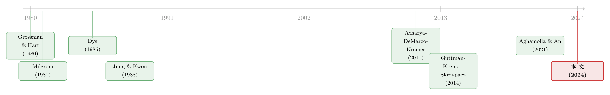

把坏消息主动说出口：当公司价值在随机游走，沉默反而更贵
本文读的是 Kremer, Schreiber & Skrzypacz (2024, The Journal of Finance)：在一个公司价值服从随机游走的动态自愿披露模型里，一个风险中性的经理，居然会主动披露那些「一说出口股价就往下掉」的坏消息。他这么做不是为了今天，而是为了明天——通过今天暴露真相，去压低市场未来的不确定性，从而托住未来的「沉默价格」。
1 一个反直觉的开场
先做一个思想实验。
你是一家上市公司的经理。今天你掌握了一条关于公司真实价值的、可以被验证的硬信息。你只关心股价——准确地说，你关心的是从今天到未来某个终点 T，市场给你这家公司打出的一串价格的加权平均。你是风险中性的：对你而言，一个确定的 100 和一个期望为 100 的赌局没有任何区别。
现在,这条消息是坏消息。如果你说出来，今天的股价会低于你闭口不言时市场愿意给的价格。
那么问题来了：你会说吗？
几乎所有人的第一反应都是——当然不说。这正是经典披露理论的标准答案：经理只披露好消息，把坏消息藏在「也许我根本没拿到信息」的迷雾里。Dye (1985) 那篇奠基性的论文讲的就是这件事——市场不确定经理手里到底有没有料，于是经理可以装哑，把低于某个门槛的坏值统统咽下去。
但这篇论文的作者告诉你：在一个动态的世界里，你会说。 而且不是偶尔失手说漏嘴，是均衡里你理性地、主动地选择说出那条让今天股价下跌的坏消息。
一个风险中性的人，明知道说出来今天会亏，却还是说了。这是为什么？
这就是 Kremer、Schreiber 和 Skrzypacz 想讲清楚的故事。而要讲清楚它，得先看懂一件事：在他们的模型里，公司的价值不是一个钉死的数，它在走路。
2 研究问题：把「随机游走」塞进披露模型
自愿披露 (voluntary disclosure) 这条文献，长期以来有一个共同的设定：被披露的那个资产，价值是固定的。要么是一个静态的一次性博弈（Dye 1985），要么是多期，但每期的信息互相独立、彼此无关。
可这跟金融市场的常识是拧着的。
在真实的市场里，随着信息一点一点地到来，一个资产的（期望）价值是随机游走 (random walk) 的——这正是有效市场假说最朴素的样子：价格是一个鞅 (martingale)，明天的最优预测就是今天的值。
一个干净的解读是：存在一个最终会实现、但此刻经理和市场都不知道的终值；经理在一期一期地「学到」这个终值是多少。于是价值过程自然成为鞅——基于一个不断扩大的信息集求条件期望，本身就是一个鞅过程。
把随机游走塞进披露模型，会冒出一个静态模型里根本不存在的新动机：
经理可以选择「等」。 今天这条信息是坏的，但价值在游走——也许下个月它就涨回来了，那时我再披露，岂不更好？这是一个看涨期权式的诱惑：隐瞒今天，赌一个更好的明天。
可故事没这么简单。接着，一个自然的问题是：如果你一直藏着不说，市场会怎么想你？
市场会起疑。市场知道你是一个会算计的人，知道你只在「值得说」的时候才说。于是你越是沉默，市场就越往坏处想——它会认为你大概率是在捂着一条坏消息。沉默得越久，市场脑补的左尾就越肥。
于是经理在决定今天说不说的时候，要同时盘算两件事：未来价值会怎么走，以及市场的信念会怎么走。这篇论文要回答的就是：在这两股力量的拉扯下，最优的披露策略长什么样？
3 模型：一步步把均衡搭出来
这是一篇彻头彻尾的理论论文，模型是全部的骨架。我们慢慢搭。
3.1 设定
时间离散，t ∈ {1, 2, ..., T}。初始价值 V_0 已知。公司价值服从随机游走：
$$V_t = V_0 + \sum_{\tau=1}^{t}\Delta V_\tau$$
增量 \(\Delta V_\tau \equiv V_\tau - V_{\tau-1}\) 是零均值、独立同分布的随机变量，累积分布函数为 F，密度 f 严格为正，方差有限。零均值 + 独立，保证了价值过程是一个鞅。
每一期 t，经理以概率 \(\pi \in (0,1)\) 学到当期的真实价值 V_t，并可以可信地披露它（信息是硬的、可验证的）。注意这个 π：它正是市场的「迷雾」来源——市场永远不知道经理这期到底有没有拿到信息。
经理的策略 \(\sigma_t(H_{t-1}, V_t) \in [0,1]\)，是在历史 H_{t-1} 和当前值 V_t 下选择披露的概率。市场把价格设为基于披露历史的条件期望 \(P_t(H_t)\)。
经理最大化一个加权价格之和：
$$\sum_{t=1}^{T} w_t \cdot P_t(H_t), \qquad w_t \ge 0,\; w_T > 0$$
这个一般化的权重设定很灵活：它能装下标准的贴现效用、装下「高管薪酬对某些特定日期的股价更敏感」的情形，也能装下「经理只在乎终点 T 那一天的价格」的极端情形（后面这个会派上大用场）。
3.2 价格怎么定：沉默价格才是主角
价格分两种情形。
披露时：只要经理披露了 V_t，由于信息可信，价格直接等于真值，\(P_t(H_t) = V_t\)，毫无悬念。
沉默时：这才是全部张力所在。设 V_τ 是上一次披露的值（τ 是最近一次披露的期，若从未披露则为 0）。此时价格是
$$P_t(H_t)=V_\tau + E\!\left[\sum_{s=\tau+1}^{t}\Delta V_s \;\Big|\; \{\sigma_s(H_{s-1},V_s),\, d_s=\emptyset\}_{s=\tau+1}^{t}\right]$$
读一下这个式子的右边：市场拿上一次披露的 V_τ 当锚点，再加上「在这一路都没人披露」这个条件下，对累积增量的期望。关键在于——这个条件期望是用经理的均衡策略 \(\{\sigma_s\}\) 算出来的。市场知道你只在值高时才说，所以「一路沉默」本身就是一条信息：它意味着这些日子里的值大概率偏低。这就是沉默价格里的怀疑。
3.3 先看最简单的一期：Dye 的门槛与「最小值原理」
要理解动态，先把静态模型（也就是理解终点 T 那一期的关键）吃透。这是 Dye (1985)、Jung & Kwon (1988) 的结果。
一期里，经理以概率 π 学到 V_1。均衡是一个门槛策略：值低于某门槛就不披露。道理很直白——披露的收益随类型递增（值越高越想晒），不披露则拿一个固定的沉默价，所以「想披露」的激励是单调上升的。门槛恰好等于沉默时的价格 P(∅)：
$$P(\emptyset)=\frac{(1-\pi)E[V_1]+\pi \cdot \Pr(V_1 把门槛设成任意的 $$\hat{P}(\emptyset,x)\equiv\frac{(1-\pi)E[V_1]+\pi\cdot\Pr(V_1 均衡门槛 $$P(\emptyset)=\min_x \hat{P}(\emptyset,x)$$ 为什么不动点恰好落在沉默价格的最小值上？直觉是这样的：在那个点上，边际类型（门槛）和平均类型（沉默价）正好相等。如果你把门槛从 记住这个原理。它的动态推广，是这篇论文最后的杀招。 现在进入动态。固定一个均衡、一个时点 论文的 Lemma 1 把所有关键性质都装在这里： (i) 如果今天披露，从 (ii) 如果今天不披露，收益是
$$w_t\,P_t(H_{t-1},\emptyset)+h(v)$$
其中 (iii) 设 第 (iii) 条是整篇论文的「心脏」，我们把它掰开。 它的经济含义是什么？ 换句话说——不确定性本身是有代价的，即便经理风险中性。代价从哪来？从 看两期的具体形式就懂了。若类型 $$h(v)=w_2\Big((1-\pi)P_2(\emptyset,\emptyset)+\pi\,E\big[\max(P_2(\emptyset,\emptyset),V_2)\mid V_1=v\big]\Big)$$ 那个 现在我们可以揭晓那个反直觉的结论了。 边际类型（门槛 \(x_t^*\)）是对披露与沉默恰好无差异的那个类型。把 (i) 和 (ii) 令等： 把 \(\sum_{s=t}^{T}w_s\) 拆成 \(w_t + \sum_{s=t+1}^{T}w_s\)，整理得 $$w_t\big(x_t^{*}-P_t(H_{t-1},\emptyset)\big)=h(x_t^{*})-x_t^{*}\sum_{s=t+1}^{T}w_s$$ 看右边。定义 \(g(v)=h(v)-v\sum_{s=t+1}^{T}w_s\)，则 \(g'(v)=h'(v)-\sum_{s=t+1}^{T}w_s<0\)（因为 Lemma 1 说 于是左边也必须为负，即 $$x_t^{*} < P_t(H_{t-1},\emptyset), \qquad t 门槛严格低于沉默价格。 这就是论文的主结果（Section III）。 它意味着什么？意味着存在一个正概率的区间——那些值落在 \([x_t^*,\ P_t(\emptyset))\) 之间的类型——他们的真值低于沉默时市场会给的价格，但他们仍然选择披露。披露之后，今天的股价立刻从 一个风险中性的经理，主动把股价往下砸。为什么？ 因为当真值恰好等于市场的平均沉默信念时（ 一句话记住这个机制：经理用今天的诚实，去购买未来市场的「少疑」。 不确定性会拉低未来沉默价，而披露是消除不确定性最直接的手段——哪怕代价是今天的股价。 主结果之外，模型还吐出几个漂亮的副产品。 「没有消息就是坏消息」：在两次披露之间，价格会持续向下漂移 (price drift down)。因为每多沉默一期，市场的怀疑就多积累一分，沉默价就被往下压一档。这跟 Shin (2006) 的 price drift 是一脉相承的，但这里是从随机游走 + 门槛策略里内生出来的。 比较静态：在两期版本里，第一期的披露门槛随着经理赋予第一期的权重 披露概率何时最大：两期模型里，当经理只在乎最后一期价格时，两期的披露概率都达到最大。 最后这一点引出了论文命名的新概念——怀疑信念原理 (suspicious belief principle)，它是静态「最小值原理」的动态推广。如果市场相信经理在用某个披露策略，它就把沉默价定为「无披露条件下的期望值」；论文证明，均衡披露策略必须对所有可能的披露策略都满足一种悲观信念性质。当经理只在乎终值时，这个原理取一个极简的形式，并直接告诉你：只在乎终价会让最后一期的价格和披露门槛都被最小化。诚实，被推到了极致。 这条线的起点，是「拆穿」式的乐观结论。 最早 Grossman & Hart (1980)、Grossman (1981)、Milgrom (1981) 证明了著名的展开 (unraveling) 结果：只要「经理拥有私人信息」是共同知识，市场就会层层逼问，最终全部披露——最好的会晒出来，剩下的被认定是次好的，再晒……一路展开到底。世界透明得不真实。 真实世界当然不是这样。Dye (1985) 和 Jung & Kwon (1988) 加了一味关键的料：市场不确定经理到底有没有拿到信息。这一下，沉默有了藏身之处，门槛策略出现了，部分披露的均衡诞生了。Cheynel (2009)、Acharya, DeMarzo & Kremer (2011) 进一步给出最小值原理，把它和资本成本、公告聚集联系起来。  但这些都是静态的，或者多期但信息互不相关。把「信息随时间演化」真正请进来的尝试不多：Shin (2003, 2006) 研究二元信号下的「净化」策略与价格漂移；Pae (2005)、Einhorn & Ziv (2008)、Bertomeu, Beyer & Dye (2011) 各自处理了多期变体，但它们要么在期末公开现金流、抹掉了动态考量，要么信息结构受限。Guttman, Kremer & Skrzypacz (2014) 的两期「不只是说什么、还有何时说」最接近，但其证据不带时间戳。Aghamolla & An (2021) 在两期正态、有披露成本的设定下，也得到了类似的「过度披露」结果——经理会在第一期披露即便压低股价。 这篇 (2024) 站在哪里？它把限制全部松开：任意分布、任意期数、价值服从随机游走，而且过度披露的动机不依赖披露成本，纯粹来自「市场不确定经理有没有信息」这一件事。这是它最干净、也最一般的贡献。 （关于「市场对价格里到底含了什么信息的不确定」如何反过来影响定价，可参见《你手里的「独家消息」，可能整个市场早就知道了》。） Q：风险中性的人怎么会在乎「不确定性」？这听起来自相矛盾。 不矛盾，关键在于经理在乎的不是当期的风险，而是未来沉默价格的水平。未来沉默价是市场怀疑的产物，市场越不确定就把左尾算得越肥、沉默价压得越低。延续收益 Q：这跟 Aghamolla & An (2021) 的「过度披露」是不是一回事？ 结论像，机制不同。Aghamolla-An 靠的是披露成本——经理权衡披露的收益与成本，在两期正态下也会在第一期亏本披露。本文没有任何披露成本，过度披露纯粹来自「市场不确定经理是否持有信息」这个 Dye 式的摩擦，而且推广到任意分布、任意期数。两者是互补的解释。 Q：「门槛低于沉默价」在最后一期 不成立。结论明确限定在 Q：经理只能披露「及时」信息这个假设，是不是太强了？ 这是模型最实质的假设。论文论证：在两期里若允许事后补披露过期信息，第一期反而会变回短视——经理会一直藏着任何「低于沉默价」的值等以后再说，主结果就塌了。现实里，美国《1934 证券交易法》Section 13/15(d) 要求公司及时披露重大信息，晚披露本身就是隐瞒的证据、要担法律责任。所以这个假设有制度支撑，但它确实是结论的命门。 Q：价值过程一定要是随机游走（鞅）吗？换个过程结论还在吗？ 主结果对几类过程都稳健：带漂移的随机游走、带均值回复的随机游走、几何随机游走。真正驱动结果的不是「鞅」这个具体形态，而是「价值会随时间演化、经理和市场对未来的信念会发生分歧」这件事。但作者也指出一个反例：如果经理能披露的只是价值的变化量（而非价值水平本身），均衡就退回静态、披露变回短视。 Q：这个模型能直接拿去跑数据吗？ 不能直接跑，它是纯理论。但它给出了可检验的定性含义：两次披露之间价格向下漂移（「没消息即坏消息」）、价格序列比价值序列更右偏（因为门槛策略截掉了左尾）、以及经理对终价越敏感、披露越频繁。这些都是可以拿真实披露事件 + 价格数据去间接检验的。 1. 把模型搬到公司债 / 信用市场。
【经济故事】股票投资者关心价值水平，但债权人关心的是左尾——违约风险。一个只在乎股价加权和的经理，他的最优披露门槛，对债券持有人未必最优。当公司同时有股、债两类索取权时，「为压低未来不确定性而主动披坏消息」这个动机会被放大还是逆转？债的存在可能让经理更愿意披露（安抚债权人、压低信用利差），也可能更不愿意（怕触发评级下调）。
【可行性】中。理论扩展 doable——在现有框架上加一个债权人的支付函数即可；实证检验需要把披露事件对齐到 CDS 利差 / 债券价格的反应，数据上 2. 外资持有人与「怀疑」的强度。
【经济故事】本文的核心是市场的「怀疑」会压低沉默价。但不同的投资者群体，怀疑的强度可能不同——信息劣势更大的外资持有人，是否对沉默施加了更陡的折价？如果是，那么外资占比高的公司，其经理的披露门槛应当更低（更频繁地主动披坏消息以消疑）。这把一个纯理论模型接到了一个可观测的横截面变量上。
【可行性】中。需要公司层面外资持股（如各国央行/监管的持股披露、 3. 披露的「右偏」能否解释价格的横截面偏度？
【经济故事】模型有一个干净的、几乎被忽略的预测：因为门槛策略截掉了左尾，价格过程比价值过程更正偏。这是一个可以拿到数据里去找的结构性印记。如果披露摩擦真的塑造了价格偏度，那么披露环境更不透明（ 4. 当「等一个更好的明天」遇上流动性。
【经济故事】本文里经理隐瞒的诱惑来自「价值在游走、明天可能更好」。但如果披露还会影响二级市场流动性（披露降低信息不对称、收窄买卖价差），经理就多了一重动机。流动性收益是否会进一步压低门槛、让经理披露得更早？这把披露理论和市场微观结构接到了一起。
【可行性】低到中。理论上要把一个流动性/价差模块嵌进来，技术上不轻；实证上「披露 → 价差」的因果识别老大难。但若能找到一个外生改变披露义务的监管断点，会很有说服力。 先说贡献。这篇论文的漂亮之处，在于它用最少的料做出了一个最反直觉的结论。它不需要风险厌恶、不需要披露成本、不需要声誉，只靠 Dye (1985) 那一味「市场不确定经理是否持有信息」的老药引，再加上「价值在随机游走」这一个新设定，就让一个风险中性的经理主动说出坏消息。把静态的「最小值原理」推广成动态的「怀疑信念原理」，是技术上的真功夫，也给后来者留了一把可复用的工具。它确实如作者所说，迈出了「弥合静态与动态自愿披露之间鸿沟」的第一步。 再说担忧。这是一篇纯理论论文，谈不上「识别」，但它的关键假设值得盯紧——「经理只能披露及时信息，错过就不能补」这条，是整个反转的命门。作者自己也坦承：一旦允许事后补披露，第一期就退回短视，主结果消失。现实里晚披露是否真的「不可能」或「代价高到等价于不可能」，是一个经验问题，而模型的全部锋芒都压在这个假设上。此外，模型让经理最大化的是一个外生给定的「加权价格之和」，这个目标函数从何而来（薪酬合约？市场压力？）本身没有被内生化——而我们已经看到，权重 后续我最想看到的，是有人把这套逻辑接到信用市场和外资持有人上去（上面的方向 1 和 2）。本文的「怀疑」是抽象的、对称的；但真实市场里，谁在怀疑、怀疑有多深，是有结构的。把这个结构填进去，这个优雅的理论才能真正长出实证的牙齿。 Acharya, Viral V., Peter DeMarzo, and Ilan Kremer (2011). Endogenous information flows and the clustering of announcements. American Economic Review 101(7), 2955–2979. Aghamolla, Cyrus, and Byeong-Je An (2021). Voluntary disclosure with evolving news. Journal of Financial Economics 140(1), 21–53. Bertomeu, Jeremy, Anne Beyer, and Ronald A. Dye (2011). Capital structure, cost of capital, and voluntary disclosures. Accounting Review 86(3), 857–886. Bertomeu, Jeremy, and Edwige Cheynel (2016). Disclosure and the cost of capital: A survey of the theoretical literature. Abacus 52(2), 221–258. Cheynel, Edwige (2009). A theory of voluntary disclosure and cost of capital. Ph.D. thesis, Tepper Business School, Carnegie Mellon University. Dye, Ronald A. (1985). Disclosure of nonproprietary information. Journal of Accounting Research 23(1), 123–145. Einhorn, Eti, and Amir Ziv (2008). Intertemporal dynamics of corporate voluntary disclosures. Journal of Accounting Research 46(3), 567–589. Frenkel, Sivan (2020). Dynamic asset sales with a feedback effect. Review of Financial Studies 33(2), 829–865. Grossman, Sanford J. (1981). The informational role of warranties and private disclosure about product quality. Journal of Law and Economics 24(3), 461–483. Grossman, Sanford J., and Oliver D. Hart (1980). Takeover bids, the free-rider problem, and the theory of the corporation. Bell Journal of Economics 11(1), 42–64. Guttman, Ilan, Ilan Kremer, and Andrzej Skrzypacz (2014). Not only what but also when: A theory of dynamic voluntary disclosure. American Economic Review 104(8), 2400–2420. Jung, Woon-Oh, and Young K. Kwon (1988). Disclosure when the market is unsure of information endowment of managers. Journal of Accounting Research 26(1), 146–153. Kremer, Ilan, Amnon Schreiber, and Andrzej Skrzypacz (2024). Disclosing a random walk. The Journal of Finance 79(2), 1123–1148. Milgrom, Paul R. (1981). Good news and bad news: Representation theorems and applications. Bell Journal of Economics 12(2), 380–391. Pae, Suil (2005). Selective disclosures in the presence of uncertainty about information endowment. Journal of Accounting and Economics 39(3), 383–409. Shin, Hyun Song (2003). Disclosures and asset returns. Econometrica 71(1), 105–133. Shin, Hyun Song (2006). Disclosure risk and price drift. Journal of Accounting Research 44(2), 351–379.x，定义一个「假想沉默价格」函数：x* 是不动点 \(\hat{P}(\emptyset,x)=x\)。而 Acharya, DeMarzo & Kremer (2011)（以及独立地 Cheynel 2009）给出了一个漂亮的刻画——最小值原理 (minimum principle)：x* 往上挪一点点到 x*+Δ，你就把 [x*, x*+Δ] 这批「比平均水平更好」的类型也塞进了沉默池子，沉默价反而被抬高了；如果往下挪到 x*−Δ，你又从池子里剔掉了 [x*−Δ, x*] 这批「比平均更差」的类型，沉默价同样被抬高。两个方向都让沉默价上升——所以不动点就是那个谷底。这也顺带证明了均衡唯一。3.4 动态的核心：延续收益
h(v) 为什么是凸的t < T、一段历史 H_{t-1}。定义 h(v) 为：类型 V_t = v 的经理今天不披露时的期望延续收益。
t 起的期望收益是
$$v\sum_{s=t}^{T}w_s$$
道理是鞅：一旦披露，经理和市场之间再无信息不对称，双方对未来任何一期价格的期望都等于当前真值 v，于是各期权重一加总就是这个。h(v) 关于 v 递增且凸，斜率严格小于 \(\sum_{s=t+1}^{T}w_s\)。ψ 是一个均值为 v、支撑与 \(V_\tau+\sum\Delta V_s\) 相同的分布，则
$$h(v) < E_\psi[h(V)]$$h 是凸的，由 Jensen 不等式，\(E_\psi[h(V)] \ge h(E_\psi[V]) = h(v)\)，而分布 ψ 是分散的（非退化），所以严格大于。v 是经理确切知道的真值（一个点）；而 ψ 是市场在沉默下脑补出的那个分散的信念（同样的均值，但摊开成一片分布）。这条不等式说：站在延续收益 h 的角度，经理面对的那个「确定的点」，比市场面对的那个「分散的云」要差。h 的凸性。而 h 为什么凸？因为延续博弈里，未来的沉默价格是市场怀疑的产物：市场越不确定，左尾越肥，未来的沉默价就越低。一个分散的市场信念，会把未来的沉默价格往下拽。v 在第一期不披露，他的延续收益是max 就是凸性的来源——它是一个看涨期权的结构。而正是这个凸性，让「消除不确定性」对经理变得有价值。3.5 反转：门槛低于沉默价
h 的斜率严格小于这个和）。也就是说 g 是严格递减的。再结合 (iii) 那条凸性不等式可以证明：在边际类型处，右边是负的。P_t(∅) 掉到这个更低的真值上。v = P_t(∅)），披露能带来一个一阶为零、但二阶为正的好处：它抹掉了市场的不确定性。由 (iii)，消除那片分散的信念云，对未来是有价值的——它托住了未来的沉默价格，让市场不再因为「你可能在藏坏消息」而打折。今天牺牲一点点价格，换来未来一连串更高的沉默价。对一个在乎未来加权价格的经理来说，这笔账是划算的。4 它还顺带说清了几件事
w_1 的增加而上升——你越在乎今天，就越不愿意为了明天牺牲今天，于是越「短视」，门槛越高（越接近静态的 Dye 门槛）。5 文献脉络
6 评论与延伸（Q&A + 研究方向）
(a) 几个可能的疑问
h(v) 因此是凸的。披露消除了市场信念的分散度，从而抬高了未来沉默价。经理享受的是这个一阶的价格收益，而不是在做风险对冲——所以风险中性完全成立。
T 也成立吗？
t < T。最后一期没有「未来」可言，延续收益消失，模型退化为静态的 Dye 门槛——门槛恰好等于沉默价（最小值原理），经理回到纯粹短视，不会再做亏本披露。这正反衬出主结果完全是动态力量驱动的。
(b) 几个可能的研究问题与提案
TRACE + 公司公告事件可得，识别难点在于剥离同期股价反应。FactSet 机构持股）+ 披露频率/及时性数据。识别策略：利用指数纳入等外生的外资持股冲击做事件研究。诚实地说，「怀疑强度」难直接度量，是主要障碍。π 更低）的行业/市场，其个股收益的偏度应当系统性更高。
【可行性】高。只需个股收益数据算已实现偏度，再按行业/制度透明度分组。这是纯描述性的、数据现成，最容易上手的一个方向。7 我的判断
w_t 的形状直接决定了门槛的高低。参考文献